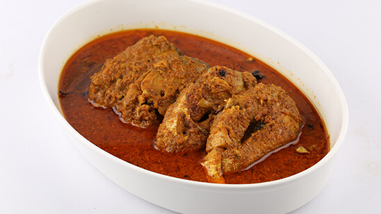

Qorma:

Description:
Qorma is a rich and creamy stew typically made with meat, yogurt, and a blend of aromatic spices. It's a flavorful dish with a slightly sweet and savory taste.
Ingredients:
- 500g meat (chicken, mutton, or beef)
- 1 cup yogurt
- 2 onions, finely sliced
- 2 tomatoes, chopped
- 2 tablespoons ginger-garlic paste
- Cooking oil or ghee
- Ground spices (coriander, cumin, turmeric)
- Whole spices (cinnamon, cardamom, cloves)
- Fresh coriander leaves for garnish
Recipe:
- Heat oil or ghee in a pot and add whole spices.
- Add sliced onions and sauté until they turn golden brown.
- Add ginger-garlic paste and cook until fragrant.
- Add the meat and brown it on all sides.
- Add ground spices and chopped tomatoes. Cook until the oil separates.
- Add yogurt and simmer until the meat is tender and the gravy thickens.
- Garnish with fresh coriander leaves before serving.